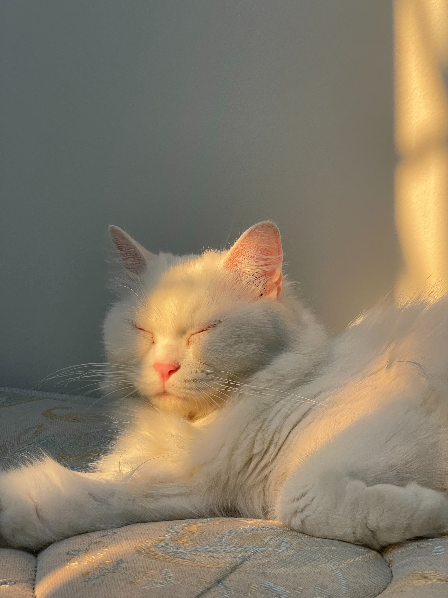
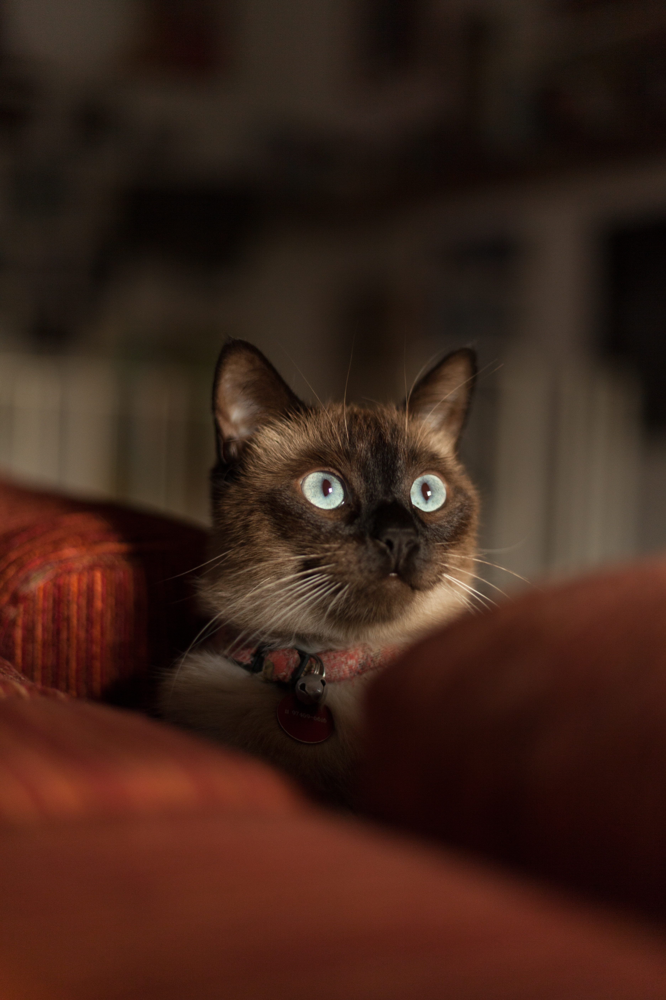

My Favorite Type of Cats
While it's hard to narrow down all the cats in the world into different categories of my favorites, I've finally dont it. I've come up witht three distinct cateogries based on what's most important to me, in regards to cats: Fluffy cats, hypoallergenic cats, and affection cats.
Fluffy Cats
The cat (Felis catus) is a domestic species of small carnivorous mammal. It is the only domesticated species in the family Felidae and is commonly referred to as the domestic cat or house cat to distinguish it from the wild members of the family.
Cats are commonly kept as house pets but can also be farm cats or feral cats; the feral cat ranges freely and avoids human contact. Domestic cats are valued by humans for companionship and their ability to kill vermin. About 60 cat breeds are recognized by various cat registries.
The cat is similar in anatomy to the other felid species: it has a strong flexible body, quick reflexes, sharp teeth, and retractable claws adapted to killing small prey like mice and rats. Cat communication includes vocalizations like meowing, purring, trilling, hissing, growling, and grunting as well as cat-specific body language.
Hypoallergenic Cats
A hypoallergenic cat is a cat that is less likely to provoke an allergic reaction in humans. Although the topic is controversial, owners' experiences and clinical studies suggest that Siberian cats, Siamese and Cornish Rex cats, Abyssinian cats, Balinese cats, and several other breeds, especially females, are likely to have low levels of Fel d 1, the main allergenic protein.
From among the above cats noted, the most popular cat breeds to be renowned for their hypoallergenic quality are the Siberian and Balinese. These cats produce much fewer protein allergens in comparison to regular domestic household cats or other cat breeds.
Cats that have some Balinese ancestry might produce lower amounts of protein allergens. Cat breeds that often have some Balinese lineage include the Oriental Shorthair, Oriental Longhair, and some Siamese cats.
Affectionate Cats
Your cat wants a solid bond with you, which it always builds. Mornings happen to be a great place to start the interaction. Cats are intelligent. They will use unique, complex cues and signs to measure how far your relationship has grown.
Their emotional bond grows more profound as they continue living under your roof. You may stay uninterested in your cat’s morning behavior if you don’t read these cues positively. But, also, this could mean you don’t understand its welfare. The result is a poor-quality relationship.

Think of when you ignored your cat’s calls, yelled at it, or bashed it off. These instances, especially yelling or hitting, can be scary to the cat. Eventually, the cat starts to avoid you, which begins a cold-shoulder reaction. That means even if you don’t like the morning cuddles, don’t overreact to your cat. There are better ways of communicating with it–like saying the ssss-cat sound.
Kitty Posts
Cute!